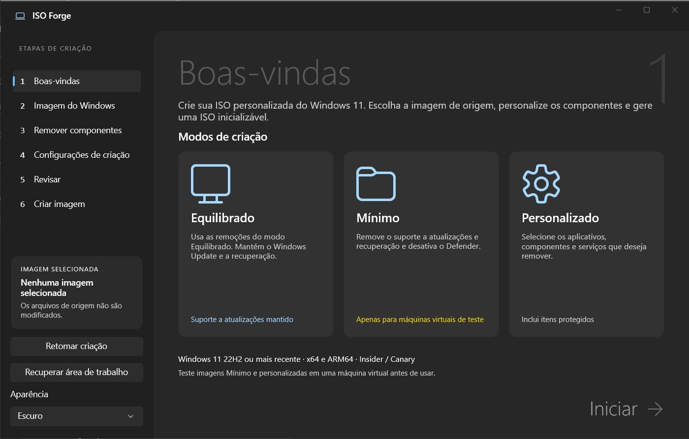
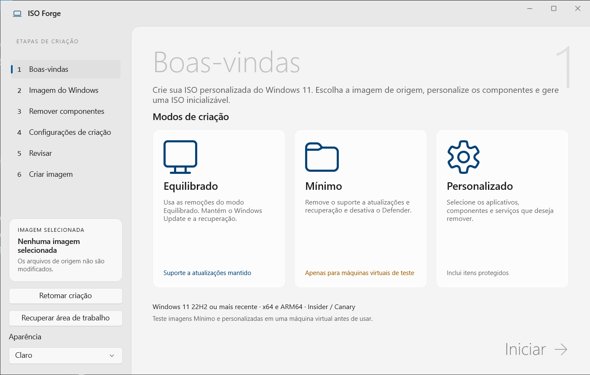

Uma ISO.
Do seu jeito.
Escolha o que fica. Defina o que muda. Crie uma imagem do Windows 11 que faz sentido para você.
Para PCs Intel/AMD · Extraia o ZIP e abra ISOForge.exe
Sem instalador. Sem precisar instalar o .NET.


Selecionar → Personalizar → Revisar → Criar
Três caminhos.
Uma imagem sua.
Selecione um modo para conhecer o que ele mantém e o que muda. A decisão final é feita dentro do aplicativo.
Menos aplicativos. Recursos preservados.
Reduza aplicativos e componentes com um conjunto de remoções predefinidas. Windows Update, Microsoft Defender e recuperação são mantidos.
Confira as remoções: alguns aplicativos dependem de componentes como WebView2.
Veja o que muda.
Antes de criar.
Da sua imagem à sua edição
Use uma ISO local, uma pasta extraída ou solicite uma mídia oficial à Microsoft. Analise a imagem e escolha a edição.
Ajustes com contexto
Revise os componentes, a compactação e as opções de instalação. As descrições explicam o efeito de cada escolha.
Progresso que você acompanha
Etapas detalhadas, logs e SHA-256 ao final. Cancele em um ponto seguro ou retome quando houver progresso válido salvo.
Extraia. Abra. Crie.
O ISO Forge é portátil. Não há instalador nem serviço em segundo plano para configurar.
- 01
Baixe e extraia
Baixe o ZIP x64 e extraia todo o conteúdo. Mantenha as DLLs e os recursos junto do executável.
- 02
Abra ISOForge.exe
Autorize o acesso de administrador solicitado pelo Windows. Escolha o modo e a mídia de origem.
- 03
Revise e gere a ISO
Confira edição, remoções, espaço de trabalho e saída. Depois da criação, teste a ISO em uma máquina virtual.
Sem letras miúdas.
É portátil ou um EXE único?
É portátil: não precisa de instalador. O pacote inclui ISOForge.exe, DLLs e recursos. Extraia e mantenha todos os arquivos juntos. Não é um executável de arquivo único.
Ele modifica o Windows do meu computador?
As remoções são aplicadas à cópia offline da imagem selecionada. Abrir o assistente não inicia a criação. O processamento usa ferramentas do Windows e grava na área de trabalho e no destino que você escolheu.
O modo Mínimo mantém as atualizações?
Não. O modo Mínimo remove suporte a manutenção e recuperação e desativa o Defender. É destinado a máquinas virtuais isoladas de teste. Não conte com adicionar idiomas, recursos ou atualizações depois.
Minha ISO também fica em português?
O idioma do Windows depende da imagem de origem. Traduzir a interface do ISO Forge não traduz uma ISO existente. Use uma mídia do Windows no idioma desejado.
O que preciso para criar a imagem?
Privilégios de administrador, área de trabalho NTFS, espaço livre suficiente e ferramentas DISM compatíveis com a mídia. O pacote x64 é para PCs Intel/AMD. A mídia do Windows não acompanha o programa.
Forje a sua ISO.
Portátil. Sem instalador. Feito para criar sua ISO.